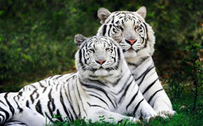
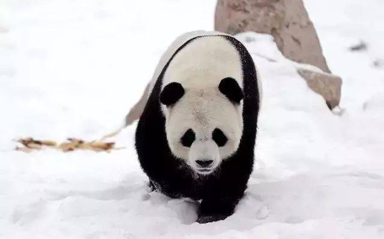
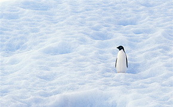
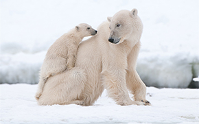

濒危动物简介
濒危野生动物是指在其整个分布区或分布区的主要部分中处于有灭绝危险的野生动物。这些野生动物物种的种群已经减少到勉强可以繁殖后代的地步，其地理分布狭窄，仅仅存在于典型地方或出现在有限的、脆弱的生态环境中。如果不利于其生长和繁殖的因素继续存在或发生，便会很快灭绝。按照世界公认的标准，一个物种的数量少到以百计算时，即为濒危物种。许多野生动物濒危的原因，多是由于人类的过度开发利用和对其特殊生境的破坏造成的。濒危野生动物是国际公约和中国野生动物保护法明确要保护的野生动物。
白化孟加拉虎
白化孟加拉虎（英文名：Bengal White Tiger）：也称孟加拉白虎，简称“白虎”，是孟加拉虎的一个变种。由于基因突变，导致孟加拉虎原本橙黄色底黑色条纹的毛发转变成白底黑纹。第一只野生孟加拉白虎于1951年在印度被发现并捕获，被取名为“莫罕”。
大熊猫
大熊猫（学名：Ailuropoda melanoleuca）：属食肉目、熊科、大熊猫亚科和大熊猫属唯一的哺乳动物，体色为黑白两色，有圆圆的脸颊，大大的黑眼圈，胖胖的身体，标志的内八字的行走方式，有解剖刀般锋利的爪子。是世界上最可爱的动物之一。
南极企鹅
企鹅（学名：Spheniscidae）：有“海洋之舟”美称的企鹅是一种最古老的游禽，它们很可能在地球穿上冰甲之前，就已经在南极安家落户。全世界的企鹅共有18种，大多数都分布在南半球。主要生活在南半球，属于企鹅目，企鹅科。特征为不能飞翔
北极熊
北极熊（拉丁学名：Ursus maritimus (Phipps, 1774)，是熊科熊属的一种动物，是世界上最大的陆地食肉动物，又名白熊。皮肤为黑色，由于毛发透明故外观上通常为白色，也有黄色等颜色，它们的嗅觉极为灵敏，是犬类的7倍，体型巨大，凶猛。